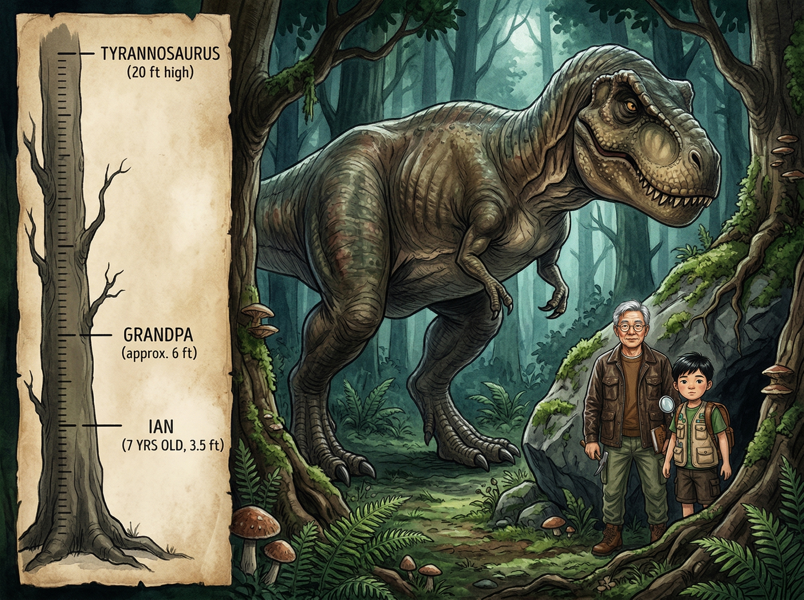

🦴 ×
0
‹
›
🌬️ 第四章
看不见的危险
风向与气味 · 动物超级感官 · 霸王龙真相

Ian闻到一股
腐烂的肉味
……
顺着气味望去——
在30米外的森林边缘，
一个
巨大的身影
正在进食。
霸王龙
（Tyrannosaurus Rex）！
12米长、6吨重
——
它的嘴巴能咬出
6万牛顿
的力量，
相当于一辆卡车压在一颗牙齿上！
🧒 "别动别动……电影里说
霸王龙看不到不动的东西……"
但Ian又想起了爷爷说过的话……
那是假的！
🎬 电影 vs 真实：霸王龙的视力
❌ 电影说："站着别动，它就看不到你"
大错特错！
✅ 真实的霸王龙有
超强双眼视觉
：
两只眼睛朝前看，视野重叠——
就像你一样！比鹰的视力还好！
它还有
巨大的嗅球
（olfactory bulb），
嗅觉和猎犬一样灵敏！
站着不动？它照样
闻得到你
！
🌬️ 科学时间：风是怎么来的？
太阳把地面
不均匀
地加热——
热的空气
上升
（变轻了），
冷的空气
过来补上
——
这个流动就是
风
！
如何判断风向？
👆
湿手指
：举起来，凉的那面是风来的方向
🍃
看树叶
：叶子飘向哪边，风就往哪吹
🌾
扬尘土
：抓一把土扬起来看飘向
猎人永远
逆风（上风）
走——
气味随风飘，在上风处，
你的味道传不到猎物那里！
👁️ 动物的超级感官
🦅
鹰
：视力是人类的
8倍
，1公里外看到老鼠
🐍
蛇
：用
热感应
器官"看到"温度，黑暗中也能找到猎物
🦇
蝙蝠
：发出
超声波
，听回声来"看"周围环境（回声定位）
🦖
霸王龙
：视觉+嗅觉都是顶级！
它是终极猎手，几乎无处可藏。
🌬️ 为什么猎人要在上风处走？
A. 因为上风处的路更好走
B. 因为上风处比较凉快
C. 因为气味随风飘，上风处的味道传不到猎物那里
Ian慢慢蹲下，
抓起一把
干泥土
轻轻扬起——
尘土飘向
他的右边
。
🧒 "风从左边吹来……
霸王龙在我右前方……
我在
上风处
！它闻不到我！"
Ian保持在
上风方向
，
悄悄地、一步一步，
绕过了正在专心吃饭的霸王龙。
心跳快得好像要从胸口跳出来！
⚡ 闪电距离计算器
看到闪电后，数几秒听到雷声？
（光速比声速快太多了，声音每秒走340米）
3 秒
⚡ 闪电在
1.0 公里
外
💡 少于3秒（1公里内）= 赶快找掩护！
Ian成功了！
他学到了：在自然界，
看不见的东西
有时候比
看得见的更重要——
风向
、
气味
、
声音
……
📚 你学到了什么
✅ 霸王龙有
超强视力和嗅觉
，"不动就看不见"是假的！
✅
风
是冷热空气流动产生的
✅ 站在
上风处
可以避免被闻到
✅ 不同动物有不同
超级感官
：鹰-视觉、蛇-热感、蝙蝠-回声
🌋 下一章：火山与生存 →
📖 目录